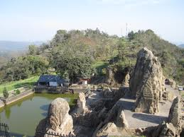
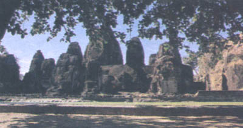
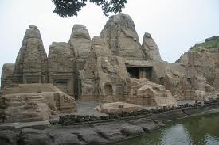
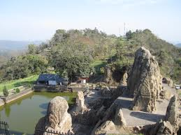
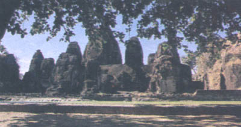
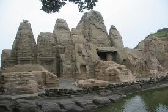
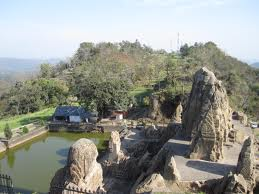
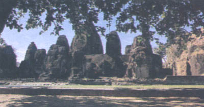
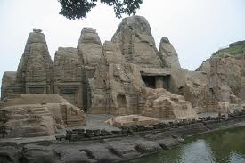

WELCOME TO
KANGRA VALLEY
HISTORY
The journey of life is strange. The Pandava’s stayed in jungles for I do not know how many years, but even then they managed to build beautiful temples and tunnels and what not! And today I am privileged to see those places, which were an outcome of their ???????????
????? ????? -The Masroor Temple is a beautiful temple located in the Kangda District of the state of Himachal Pradesh. Most of the tourists visit Dharamshala and Chamunda Temples but they miss this extremely beautiful spot, which is not yet developed by the Himachal Tourism but it looks better undeveloped and in its raw form only.
The legend says that ??? and his allies built the temple to please the local deities. The temple is monolithic and carved out of a small mountain or a big rock. The temple is rock-cut temple and no part of the temple is modular or designed separately. No doubt, the man of caliber of ??? only could do such wonder.
However, during the 1905 earthquake, the temple was damaged badly and it resulted in destruction of some of the parts of these temples. The Tourism Board says that the whole site consists of 15 temples. However, I couldn’t find any different temples and concluded that there was only one temple there.
The temple also has a small tunnel/????? that connects the lower part of the temple to its upper part. There is a pond in front of the temple, which is just beautiful. Just next to the temple, a Government School is there and these kids are privileged to study at such a serene place.


 

